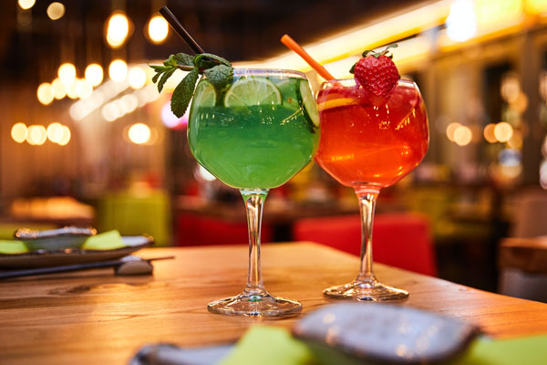

Interactive Cocktail Cabinet
Key in the cocktail name and out comes the list of ingredients to make the cocktail and also instrustions on how to make it. In this resource, there are thousands of cocktails. Please key in the full title of the cocktail. Some examples are: Bloody Mary, Singapore Sling, Margarita, Old Fashioned, Negroni, Daiquiri and etc.

Cocktail name: Bloody Mary
Ingredients:- 4.5 cl (3 parts) vodka
- 9 cl (6 parts) Tomato juice
- 1.5 cl (1 part) Lemon juice
- 2 to 3 dashes of Worcestershire Sauce
- Tabasco sauce
- Celery salt
- Black pepper
Instructions: Stirring gently, pour all ingredients into highball glass. Garnish.